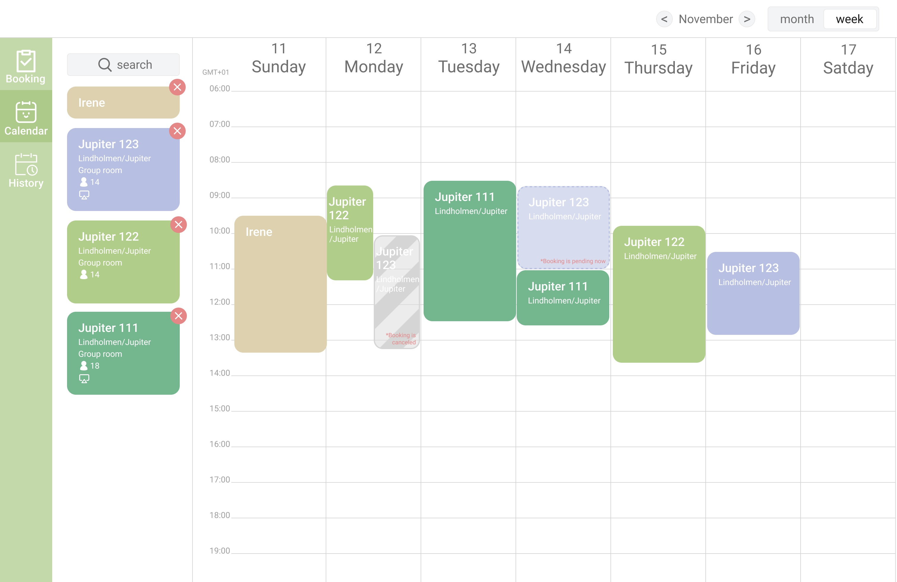
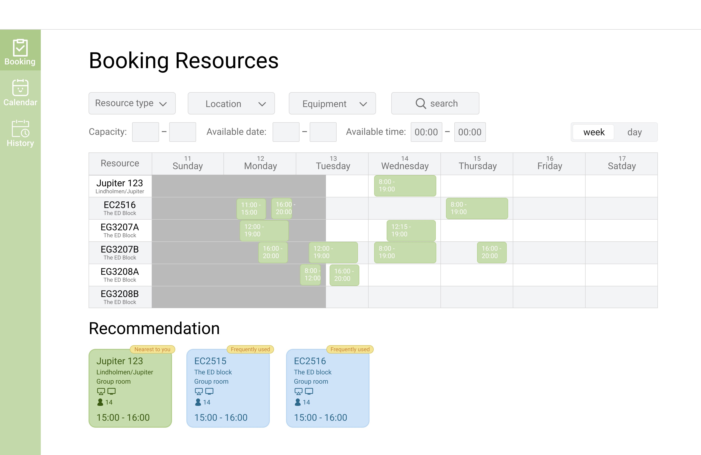
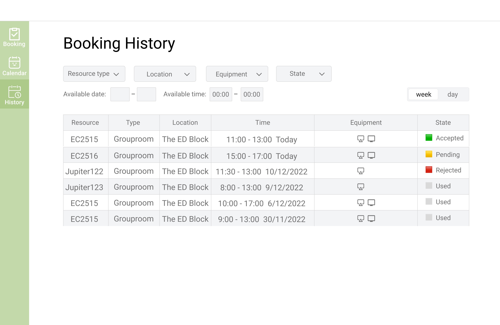
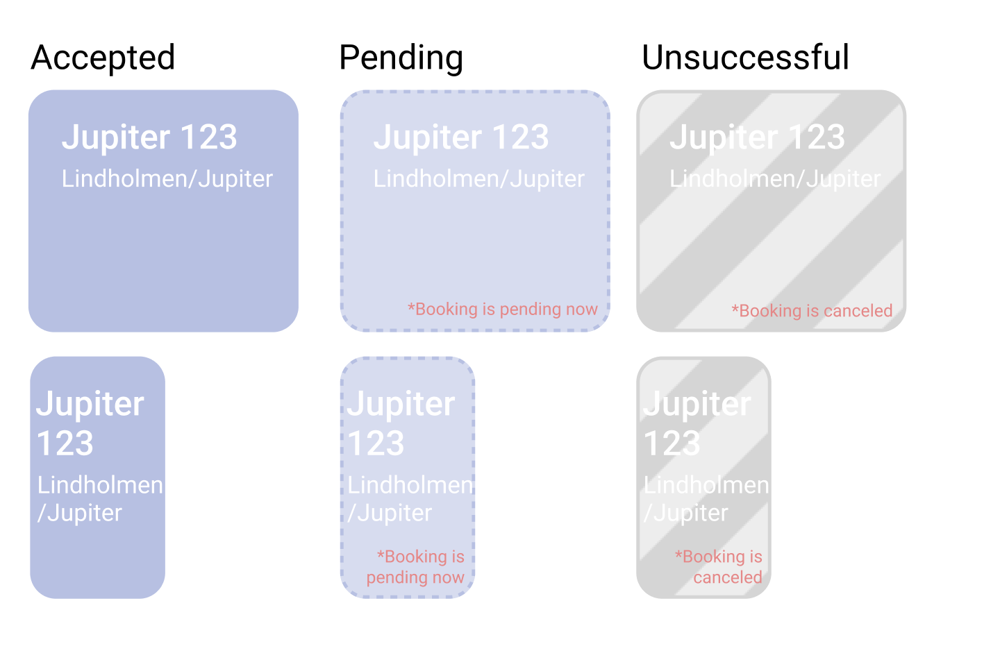
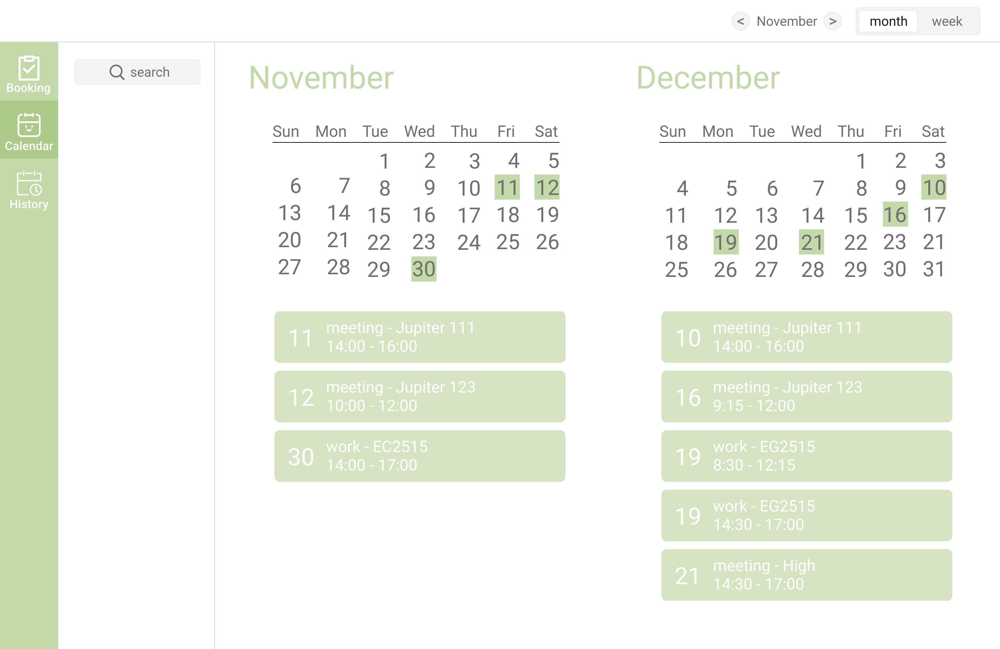

resource booking

Hello everyone, I choose the resource booking as my topic. My design offer two different ways for users to create a booking. The first is booking in the calendar view, which is mainly for the sovereign posture.

Another is more like quick booking, and it is often used in transient posture.

What’s more, according to the requirements on Canvas, there are also booking history page through which users can check their booking history and edit them.
▶️
So let’s start with the calendar view. Why I say that the using of this page is sovereign posture is that the calendar view enables users choose the time and select resources carefully. They can compare the equipment, location and capacity of the room to select the most perfect time and resources. They can also choose and book resources such as computer, printer etc.
First, users can search the room, or the other resources, or even people by clicking the search bar. They can type in the requirements and the system will list all of the room satisfy the requirements, the resources will be listed according to the relevance, if there are only a little rooms satisfy the requirements, the system will show more room to give some alternatives, those where not satisfy the requirement will be colored as red. By clicking the add button of the room, you can add the room to the list on left of the page, and u can always see the detailed information clearly in the list. There is the name of the room, the location, capacity, and equipment.
On canvas, there is a using context that the teacher needs to book three rooms for two exercises and each room must hold at least 20 people, must close with each other, and be available at Tuesday afternoons. Teacher can choose the classrooms which meet their needs through this page easily. At first, the teacher can add the room they interested in to the list on the left of the page, and then check the schedules of the room, and then booking them.
▶️
I mentioned equipment right now and u can see, I used icon to replace the word "projector" "TV" or "whiteboard", it save more space and more user-friendly if the user is familiar with the icon. But for the new users, they only need to move their mouse to the icon and then they can see what it is.
▶️
After they decide which rooms and time they need to book, they only need to click the time they want to book on the calendar, and then the booking window will pop up and booking information will be autofilled according to the list on the left of the page and where they clicked in the calendar, but users can still modify the booking information according to their needs, they can edit the title of the activites, change the time, add or delete a room or add people.
▶️
So in this case there are 3 rooms and one people in the list, the booking information will be autofilled like this. I also want to talk about the people input box, sometimes we need to add this event to someone’s calendar, for example, my time edit show me the lecture and the deadline of the assignment. So if the user is teacher, some relevant groups will pop up to give some convenient when they click the people input box. And sometimes students need to book a time for group discussion, it is important to confirm that everyone in this group is available that time, so that they can simply add every group member to the list on the left so that they can check everyone’s public schedule easily.

After user submit a booking, the block will change to “pending” status. I have to introduce the three different modes in my system. the first is accepted, which means the booking is confirmed and users can use the resource they booked. The second is pending, which means the booking need to be confirmed. For example, when the administrator of the equipment need to review and approve this application, the block will show pending. The third is cancelled, which means you did not book the resource successfully, in such situation the block will be colored with grey stripe to distinguish from other blocks.
▶️
Users can modify the booking by clicking the block. Of course, the rebooked application should be in pending mode again
User can also edit the booking by drag the block in the calendar, and the new booking time will be autofilled according to where the user drags to.
Finally in this page, there are two alignment line follow your mouse. I design this to help users easier to align with the time and date in the calendar so that they will make less mistakes.

Except for weekly view, I also offer monthly view, users can switch between these two mode by clicking this, which allows users to check their schedule in a whole month so that teacher will have an overview of their courses of this month and students can also check if they have a weekly meeting.
So there is the second page. This page was designed for transient posture, we show the schedule of each room separately. The grey part shows the pastime. It is very easy for the user to check and book a resource quickly if they only need to book one resource and has a clear aim for a specific resource.
▶️
Users can choose resource type, location, equipment, capacity, time and even search the name of the resource there. More information of the room such as capacity and equipment can be seen easily if u move your mouse to the name of the resource
What’s more, in the below of the page there are some recommendation. I design this because I came up with such situations that I want to find an available room for group meeting in next 1 hour. The “nearest” recommendation solve this problem perfectly. It just tell me that there is a room nearby is available and I only need to click it simply to complete the booking. The recommendation will also give advice according to the history booking of the user.
▶️
Finally, I also offer the history view which enables user to check their booking history, there are some filter for user to search the booking and they can also edit the booking there by clicking it.